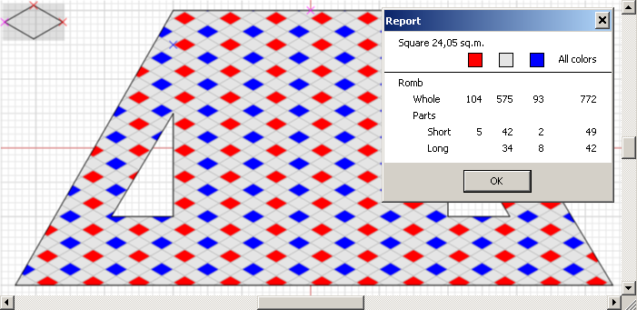
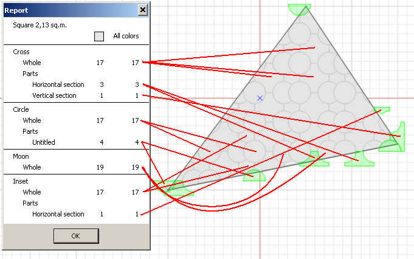
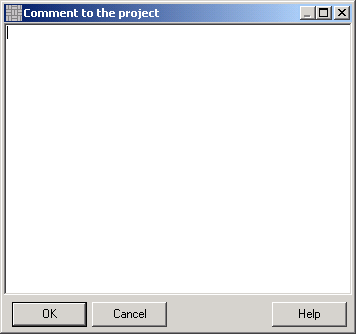

The report gives you a notion on the expected number of tiles that will be used, including the halves. To view the report, go to Plot > Report.
The first line of the report displays the area and the perimeter length, including the perimeter of the internal, artificial voids that can, for example, identify flowerbeds. The table displays data about the number of tiles (integer tiles and halves) divided by colors. Columns of the table show stats on the tiles grouped by color: the first row - integer tiles; the second and further rows - number of halves of different types. The last column shows the summary number of integer tiles and halves of all colors.
From the example below you can see that you will need 575 grey integer tiles; 42 crosscut and 34 lengthwise grey halves. The same info you can view about blue tiles: 93 integer tiles, 2 crosscut and 8 lengthwise halves; and about red tiles: 104 integer tiles, 5 crosscut halves.
The summary is: 772 integer tiles, 49 crosscut and 42 lengthwise halves.

If the pattern consists of the different types of the tiles, the report will display info on each type, including integer tiles and halves. In the example below, red lines interconnect quantity of tiles and halves with their originals on the plot.

If you doubt about the number and position of the halves, feel free to use this button. Click it to see all halves on the plot: the program will highlight their outlines. Note that this button is sticky, and if you re-pave the plot, the program will immediately display you all halves. Click the button once again to deselect the halves.
If you want to write any notes or comments for the project, go to Plot > Comments. Here you can enter any data you need, for example customer contact info.
